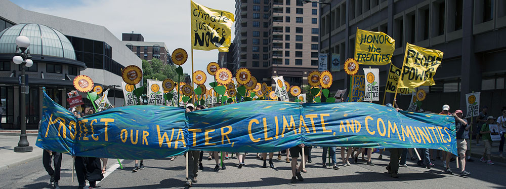

The issue
Scientists as advocates. Should Scientists step outside of their archetypal roles as dispassionate investigators of the physical world, taking time away from asking questions of how things are, and instead offer opinions on how they think things should be? Is this a moral obligation? Or is it simply dangerous irresponsible territory beyond their purview? Should we just be good little investigators and know our place? Or in fact, are these the wrong questions to ask, devoid of the nuance and perhaps ironically implying that even needing to ask it begs only the answer, 'when you grow up'.
In Cosmos, Carl Sagan, and later his spiritual successor, Neil deGrasse Tyson, both passionately discussed not only scientific facts but also issues of contemporary importance. For Carl Sagan, who made the original Cosmos during the Cold War, the main issue of the day was nuclear proliferation. While more recently, Neil deGrasse Tyson rightly honed in on the dangers of environmental damage and Climate Change. This is advocacy, no two ways about it, but what does that really entail, and what kind of discussion is currently going on in the climate community about advocacy?
What is advocacy?
In a 2013 AGU talk Professor Gavin Schmidt of NASA states that advocacy is 'the defence of your value positions'. The idea is that a scientist has a factual view of reality, arrived at through the scientific method and the portion of accumulated scientific knowledge of which they are aware. This information is mixed with our own personal biases and leads us to arrive at a set of values we perceive to be important. Advocacy is then an expression of these values.
(I note that Gavin's talk mainly revolves around the ideas of the late Professor Stephen Schneider, a profound thinker on this subject. For those interested in reading more on this topic, his work Science advocate an Oxymoron? is a must.)
Another definition, following the article of Nelson and Vucetich (2009), On Advocacy by Environmental Scientists: What, Whether, Why, and How”, argues that we may consider all communication of science not expressly for relaying our work to colleagues a form of advocacy. So any popularization of science (like I Fucking Love Science) is advocacy, just in an uncontroversial form. The type of advocacy that is controversial, and is the kind I wish to discuss, is defined by Nelson and Vucetich as 'promoting, developing, or assessing policy positions'. Given this, as Nelson explains, the more appropriate question is not, if advocacy is appropriate, but "which kinds of advocacy are acceptable and, most importantly, how ought we to go about advocacy and how ought we as a scientific community react to advocacy".
Some recent views
There have been clear voices against advocacy however, particularly in relation to the climate community, often centring around arguments of bias, impartiality, and ethics that suggest it is problematic for scientists to express views beyond communicating their science. Such ideas can be found in one form or another in a Guardian article by Tasmin Edwards, or many others including Doug McNeall, Virginia Burkett, and Judith Curry. Even Brian Cox, someone I much admire as a science communicator, has clearly stated that scientists should not advocate (e.g. see 15:46 of Gavin's video), and has also stated that "Advocacy has damaged trust in the science".
Even the Royal Society has had issues with the idea that advocacy should not be part of science, with a group of 43 members, led by Andrew Montford, attacking the outspoken stance of their leaders on climate change. The dissenting members published a report in 2012 entitled Nullus in verba (the motto of the Society, which I take as simply an admonishment to remain sceptical). The report essentially chided the society for straying away from what they saw as pure science, arguing that the society has lost its way by engaging in advocacy. It is certainly true that the RS has somewhat cornered itself by advertising in The Philosophical Transactions (1753) that "...it is an established rule of the Society, to which they will always adhere, never to give their opinion as a Body upon any subject either of Nature or Art, that comes before them". Perhaps this is a case where a 262 year old idea doesn't perfectly map onto the modern era, or something crazy like that. (I would certainly not criticize the RS for being out of date in general though, as, to my mind they are doing great work in encouraging Open Science, and I am personally very excited to see how their new Open Science journal will develop.)
In essence, Montford's group are dancing around the idea that advocacy puts the credibility of organizations and scientists at risk. A post by Dr Aaron Thierry offers a point that ideologically opposes this which I agree with, that it is in-fact bad science, not advocacy, that threatens trust in scientists.
Either-way, the facts on the ground show clearly that the majority of public and also scientists support scientists voicing their opinions: A Pew Research Poll in 2009 showed that a large majority of the public in the USA (76%), and nearly all scientists (97%), think that it is appropriate for scientists to become actively involved in political debates on controversial issues. Despite these numbers I think that there is still disagreement in the community as to what manner and extent of advocacy is appropriate.
The personal element
To get an idea of what the dialogue between scientists looks like on this topic for example you can see this twitter conversation from Gavin Schmidt. Speaking from experience I would say that most climate scientists are motivated by much more than just scientific curiosity. Many are at their heart idealists, motivated by a wish to create a sustainable future for mankind and ensure a biodiverse and healthy planet. So the idea that climate scientists should concern themselves only with carrying out and reporting research, not attempting to participate and shape public and political discussions seems incompatible with this idealism.
An obvious but key point is that scientists are citizens, and as Nelson states in an interview, "...citizens in a democracy have a moral obligation to actively promote within their society that which they are justified in thinking is right or good and to actively opposing that which they are justified in thinking is wrong or bad. Consequently, because they are citizens, every scientist has an obligation to be just and transparently honest advocates.".
Nelson goes on to capture the essence of what I previously mentioned when I said that personal bias interacts with scientific understanding (and vice versa) to shape our values and advocacy, when he states: "If I admittedly and intrinsically value that which I study, and if in my study of it I discover threats to it, I think the leap to my willingness to act on its behalf is hardly a leap at all.".
The damage
So what is the harm with advocacy anyway? In my own background, I was exposed to the idea that advocacy is a form of bias -- a lack of impartiality -- and is consequently antithetical to Science. Moreover, as I mentioned worries have been voiced that advocacy damages the reputation of scientists in general. But I see this as a non-issue: to a scientist, bias has a specific meaning, markedly different from everyday use. In the world of science, impartial means limiting bias in experimental design and analysis, an integral process in science. Carefully designing hypothesis and experiments so that we, 'don't fool ourselves', as Richard Fenymann (approximately) put it. However, in common use, and particularly in relation to divided political issues, to be impartial means something else entirely: neutrality. These definitions are not compatible, and conflating them through linguistic sleight is a mistake, because it is fantasy to think that scientists are neutral.
For the overwhelming majority of climate scientists who agree with the conclusions of the IPCC, I would not for a moment believe that they are impartial with regards to questions of emission regulation or divestment in non-renewable resources. On this matter Stephen Schneider said that we all have value positions, and it is our responsibility to make them conscious and explicit. Similarly, in his AGU talk, Gavin Schmidt echoed this point, stating 'Many believe in pretence of complete objectivity, and remain entirely neutral. Not true, how matter how hard we strive.'.
Another argument presented against advocacy implicitly appears in Tasmin Edwards Guardian piece, relating to perceived scientific authority and the potential dangers of promoting values from such a position. (Think of the psychological effect of the 'authority figure in the white coat' from the Milgrim experiments.) Without wanting to put words in her mouth, I assume that Edwards is being cautious of coercing potentially sheep-like minds with views that she recognizes as originating from her own values with perceived authority. I find it hard to worry too much on this point however, as the intentions of the climate community are to avert global catastrophe. Thus it seems to make little difference in this case if people are convinced out of trust/deference to a Milgrim-like authority figure, or because they understand the physical arguments. More importantly though, I think that there is a clear and recognisable distinction between the scientist speaking, the scientific evidence they present, and the opinions/recommendations they give.
If we consider a scientist simply as a person who understands and practices the scientific method, acknowledging that just like all people they possess their own biases. And we consider Science itself to be the application of critical tests to ideas with the aim of arriving at an understanding of the material world. Then it seems quite plain that just because a scientist speaks in a public forum, does not mean they speak for Science (nullus in verba). They can communicate the fruits of scientific labour and comment on them, but the spectre that they may speak with the authority of Science, forever damaging the reputation of scientists is misplaced.
For a view from the ground, my friend and colleague, Hans Brenna, a climate researcher currently investigating the role of volcanoes on stratospheric chemistry, believes that the logical result of arguments against advocacy are a slippery slope. Leading to the conclusion that if scientists are unable to advocate based on their understanding of scientific results and their own values, then no experts or person with competence in a field should be allowed to advocate based on their understanding of that field. He argues that this creates nonsensical results, making enlightened advocacy and public debate impossible. He suggests that the origin of this objection is most beneficial to a general PR campaign against climate scientists, encouraging politicians and public alike to ignore the advice of climate science. Hans says "I'm afraid that if it succeeds on us, it will be brought to bear on other controversial topics in the future".
The conclusion
Aside from being unrealistic, general calls to limit the advocacy of scientists may be detrimental or even destructive, by encouraging the removal of the voices of people who have the clearest understanding of the world and climate change from the public discussion.
As a final example, let's say you were sitting in a burning house, but for some reason you are unsure if the house is really burning (perhaps too much Descartes before bed). You call a scientist, who promptly arrives to determine if the house really is on fire. After doing the appropriate test, the scientist tells you that with a >99.9% probability the house, is, indeed on fire. He then hastens to add you should leave before you burn alive, as he considers that this would be undesirable. The difference between the scientific conclusion, and the policy advice should be clear. Is it inherently problematic for the scientist to suggest a course of action? Or rather, is it their moral imperative if they believe that your burning alive would be a bad thing?
I think that only a moral relativist could object to the above, as it would require arguing that it is wrong to assume simply because the scientist in my story does not wish to burn alive that they presume you would also value this outcome.
After considering this issue, I would say that the question of should scientists advocate is invalid, as, unless we wish to communicate via raw data, advocacy in some form is unavoidable. After acknowledging that all scientists are individually free to advocate or not as they wish, the real question is how to do so responsibly and ethically. I believe this comes down to the individuals making their value judgements clear. Again, Professor Stephen Schneider has already lucidly outlined these points years ago.
Go Top
comments powered by Disqus